MCC MegaCell Compiler Tutorial |
Part 2
Running MCC
Overview
- In this part of the tutorial ,we describe how to run MCC and how to write the MCC control program.
- MCC provides 4 basic commands to MAX:
MC Build MC What MC Critical Path MC Netlist
- We will cover each of these commands in this tutorial.
MC Build
- To create a megacell, you need two things: the leaf cells in MAX format and the control program written in Tcl. The control program sets up parameters and defines the tiling, via programming, and port propagation. Typically, this control file is sourced by the
.maxrcfile on startup. Otherwise, it can be sourced from the command line in MAX. It can also be included directly in the.maxrcfile.
- Refer to the "Creating Megacells" section of the MCC Manual for details on MCC control program syntax.
- As part of this tutorial, we have provided an example SRAM control program written in Tcl along with the necessary leaf cells in MAX format.
- First, we will create a small version of the SRAM and look as some of the tiling features.
- In MAX, go to the
Toolmenu and selectMC Build. The popup form in Figure 2 appears.Figure 2: Megacell Generator Popup Form
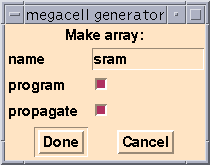
- Notice that the name of the megacell is already filled in. When you started up MAX, the
.maxrcfile in the current directory was read into MAX.
- It sources the control program,
sram.tcl.
- Look at
sram.tcl(typemore sram.tcl) and notice the following lines:# Default generator name in "MC Build" menu. set MC(default_generator) sram
- The variable
MC(default_generator)specifies the name of the generator that is filled in when you startMC Build. The variable can also be defined in a.maxrcfile.
- The
programandpropagatetoggle buttons (refer to Figure 2) control whetherMC Buildshould program the vias and propagate the terminals, respectively. Typically, these toggle buttons should be on, as in the example. We will discuss this in detail later.
- Accept the defaults by clicking on
Done. Another popup form appears (see Figure 3).Figure 3: SRAM Generator Properties
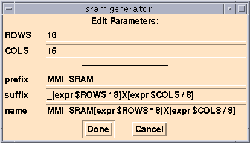
- The parameters in the top part of the form, and their defaults, are defined in the
sram.tclfile.
- Look at the
sram.tclfile and notice the following lines:# Parameters associated with this generator so the # user can change them in the menu. set MC(sram,parameters) "ROWS COLS" ... # Parameters that control SRAM size and shape. set ROWS 16 set COLS 16
- The variable MC(sram,parameters)
specifies the additional fields that are parameters for the SRAM megacell. The default values specified in this case are the smallest reasonable size of SRAM that can be built with this control program.
- MCC now builds the SRAM. It first tiles all the cells as specified in the
sram.tclcontrol program. It then does via programming, and finally propagates the I/Os to the top level of hierarchy. You should see the completed SRAM as shown in Figure 4.
Figure 4: Layout For "MMI_SRAM128X2"
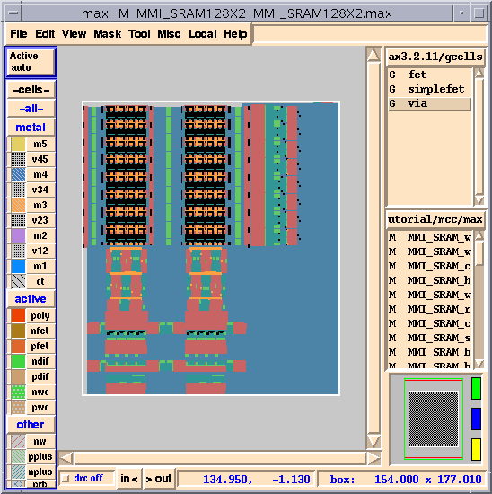
Tiling
- Now, we will look at how tiling works in an MCC control program. To do this, we will push into some of the smaller cells that make up this SRAM.
- Select the SRAM cell (
mmi_sram_cell) as shown in Figure 5.
(Place your mouse over the cell and use the use the f hotkey forSelect Cell. You might need to type the f hotkey multiple times without moving the mouse to toggle through the cells under your mouse.)Figure 5: The Selected SRAM Cell "mmi_sram_cell"
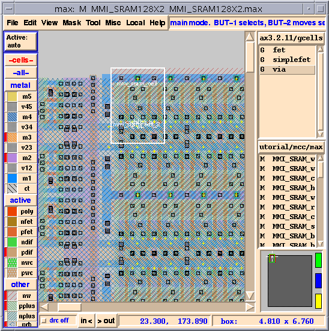
Figure 6: Layout Of "mmi_sram_cell"
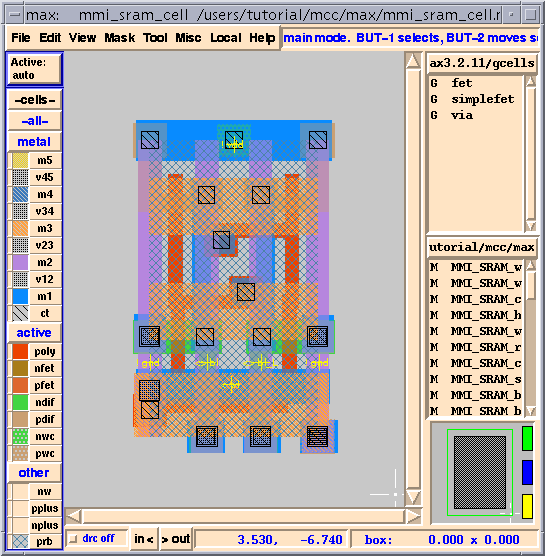
Abutment
- The tiler places cells next to and on top of other cells. To do this correctly, the tiler needs to know the desired cell abutment boundaries. This is especially important for memories because leaf cells typically overlap and share contacts, wires, and source/drain areas. Note that MCC does not care about the cell origin, only the abutment boundaries.
- MCC supports different means of determining the cell abutment boundaries.
- The suggested and most common way is to draw a special layer in each leaf cell whose extent is the abutment boundary. This layer is often called "
prb" for "place and route boundary".
- This was the method used for the cells in our SRAM.
- You can also type the coordinates of the abutment boundary into the
MC_DATAarray. If you had a leaf cell called "foo" whose abutment boundary was at the coordinates (0, 0) and (13.4, 8.6), you would add the following line to a file that needs to be sourced into MAX (for example, in your.maxrcfile) before you run MCC.
set MC_DATA(foo) "foo 0 0 13.4 8.6"
- Refer to the "Abutment" section of the MCC Manual for more details.
Text Labels
- While we're looking at
mmi_sram_cell, let's look at how the labels are specified for the cell.
- You should now see something like Figure 7.
Figure 7: Text Labels For Magnified Area Of "mmi_sram_cell"

- For your design to be properly netlisted, as well as to be able to do critical path analysis, you need to properly define the ports on each cell. All inputs should be defined as input (signified with the < symbol in front of text). The same needs to be done for outputs (> symbol) and bidirectional ports (<> symbol). Power labels need to be defined as globals (! symbol). Refer to the MAX User Guide for details on how to specify text direction and type.
Basic Tiling Commands and MC What
- Let us look at some basic tiling commands. To do this, we'll push into some of the lower level cells of the SRAM and use the
MC Whatcommand to help us understand the tiling commands.
- Select the
MMI_SRAM_cell_4_128X2cell by typing f (select cell) multiple times over the same location until the correct cell is selected, as shown in Figure 8.
- Because this is a cell generated by MCC, notice the
MMI_SRAM_prefix and the_128X2suffix. When we generated this SRAM, the prefix was set toMMI_SRAM_(see Figure 3). The suffix was set to:
_[expr $ROWS * 8]X[expr $COLS / 8]
- Remember both
ROWSandCOLSwere set to16, therefore the suffix will be_128X2.
Figure 8: "MMI_SRAM_cell_4_128X2" Cell Selected
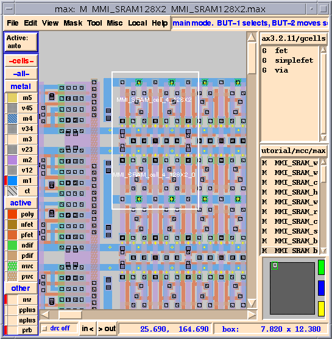
- You should now see the layout for the cell, as in Figure 9.
Figure 9: Layout For "MMI_SRAM_cell_4"
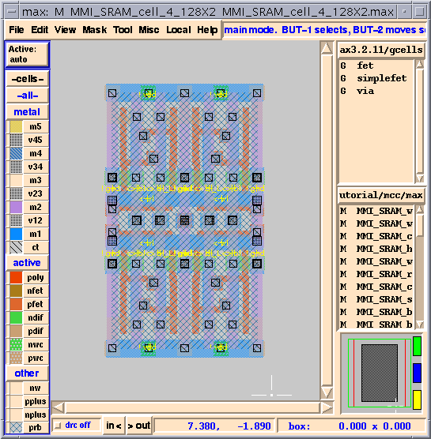
MC What
- This cell has four placements of
mmi_sram_cell. The easiest way to learn how to tile cells is to use theMC Whatcommand.MC Whatlooks at your current cell and figures out the tiling commands for your control file and prints those commands in theMAX Command Window(the window from which you started MAX).
- The following exercise demonstrates how to use
MC What.
- Go to the
Toolmenu and selectMC What. The popup form in Figure 10 appears.Figure 10: MC What Popup Form
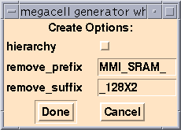
- The
hierarchybutton controls whetherMC Whatonly writes out the tiling commands for this level of hierarchy (toggle turned off) or generates the tiling commands for all levels of hierarchy under the current cell (toggle turned on).
- Go to the
MAX Command Window(the window from which you started MAX) and look at what MCC printed out. You should see something like the following:Creating MC build commands for cell "MMI_SRAM_cell_4_128X2" ... set MACRO(cell_4) {CELL {{mmi_sram_cell fy} {mmi_sram_cell r180}} {mmi_sram_cell {mmi_sram_cell fx}}}
- Use the h hotkey or select
Internals, Hide Areafrom theViewmenu.
You should now see something like Figure 11.Figure 11: "MMI_SRAM_cell_4" With Internals Turned Off
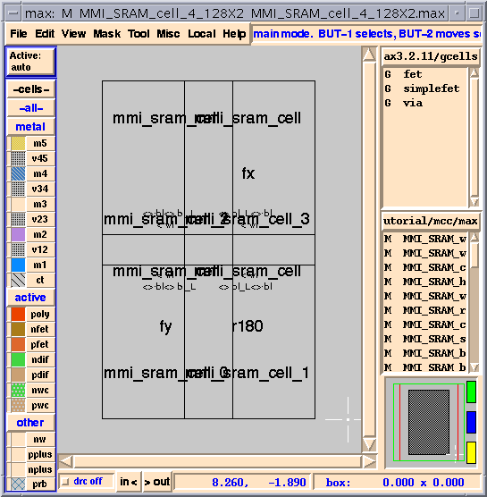
- Let's look at the tiling command again.
set MACRO(cell_4) {CELL {{mmi_sram_cell fy} {mmi_sram_cell r180}} {mmi_sram_cell {mmi_sram_cell fx}}}
- MCC tiles rows of cells from the bottom up. So, the first (bottom) row is:
{{mmi_sram_cell fy} {mmi_sram_cell r180}}
- If you look at Figure 11, you'll see that the first cell has an orientation of fy (flipped around the y-axis) and the second has an orientation of r180 (rotated 180 degrees). The second row is:
{{mmi_sram_cell {mmi_sram_cell fx}}
- Again looking at Figure 11, in the second (upper) row the first cell is neither rotated nor flipped and the second cell has an orientation of fx.
More Tiling Examples
- Let us look at another example of tiling.
- Select the
MMI_SRAM_half_row2_128X2cell by typing f multiple times over the same location until the correct cell is selected, as shown in Figure 12.Figure 12: "MMI_SRAM_half_row2_128X2" Cell Selected
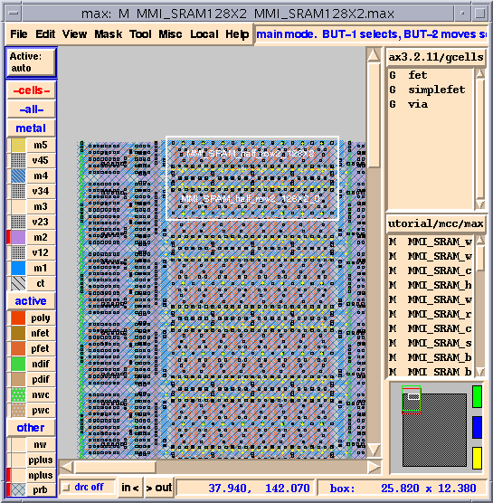
- You should now see the layout for the cell, as in Figure 13.
Figure 13: "MMI_SRAM_half_row_128X2" Cell
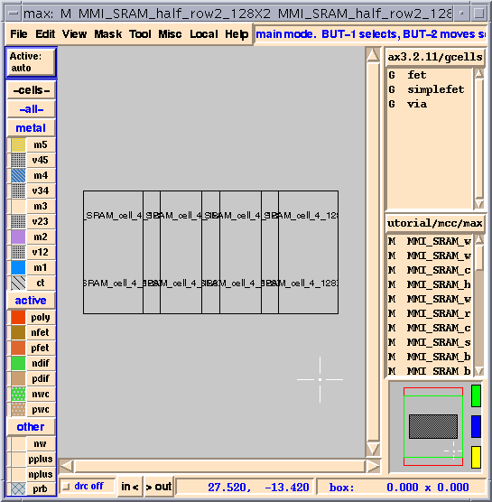
- Go to the
MAX Command Window(the window from which you started MAX) and look at what was printed out. You should see something like the following:Creating MC build commands for cell "MMI_SRAM_half_row2_128X2" ... set MACRO(half_row2) {CELL {{REPEAT 4 cell_4}}}
- This example has
cell_4_128X2repeated four times. The tiling command uses theREPEATcommand to accomplish this. The result fromMC Whatuses an absolute value for the number of times to repeat the cell.
- Look at the
sram.tclfile (more sram.tcl) and look for the following line.set MACRO(half_row2) {CELL {{REPEAT [expr $COLS/4] cell_4}}}
- Notice that instead of an absolute value, an expression is used that gets the
REPEATvalue from the variableCOLSdivided by 4. This makes our SRAM parameterizable.
- You should now see something like Figure 14. (For more examples of tiling commands, go to the "Tiling" section of the MCC Manual.)
Figure 14: Example Floorplan Of SRAM
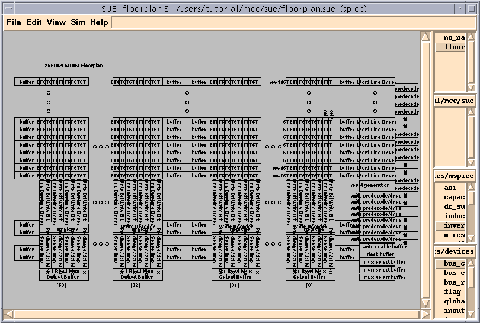
Via Programming
- Once you have tiled up a memory, you need to make every memory cell unique. This entails, at the very least, programming the word line decoders so that each one gets a unique set of addresses. Instead of creating overlay cells that contain the desired connections, or specifying exact X,Y locations, MCC uses via programming. Connections are done with vias and programmed algorithmically, simplifying the programming of vias.
- To further simplify via programming, MCC determines where to put the vias and what vias to use by tracing nets. You need to specify only the desired ports to be connected, and MCC will figure out where the nets overlap, and what the layers are, and add the appropriate vias. If you need to change your design or port it to another process, the via programming will still work because it is not hard-coded to any positions.
- Let's look at our small SRAM to see how to program the vias for the word line decoding.
- Push into the
MMI_SRAM_wlds_128X2cell. You can either do this by selecting it with the f hotkey (as shown in Figure 15) and then pushing into the cell, or you can selectMMI_SRAM_wlds_128X2from theCell List.Figure 15: "MMI_SRAM_wlds_128X2" Cell Selected
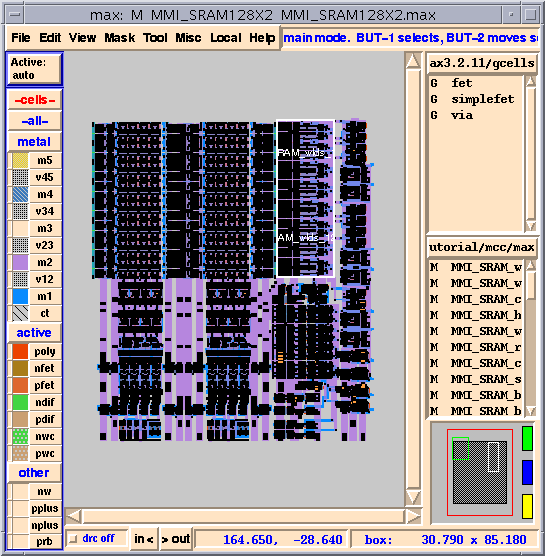
- Zoom in on the bottom third of the cell and select a
mmi_sram_wldcell (hotkey: f) as shown in Figure 16.Figure 16: "mmi_sram_wld" Cell Selected
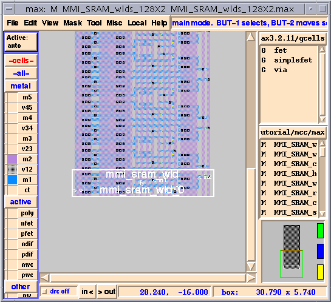
- Zoom in on the area as shown in Figure 17. The arrows in the figure point to the locations
v12vias will be placed. Vias can be placed where rectangles on different layers overlap.
- The via programming is actually done in the higher level cell,
MMI_SRAM_wlds_128x2.
Figure 17: Locations For Via Programming
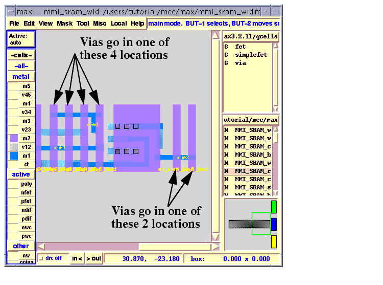
- Zoom in on the lower right section of the cell, as shown in Figure 18.
Figure 18: "MMI_SRAM_wlds_128X2" Cell
- Select the right-most
m2net as shown in Figure 18. This net is nameden_a3_0_feed.
- Your should now see the schematic shown in Figure 19.
Figure 19: Via Programming Schematic
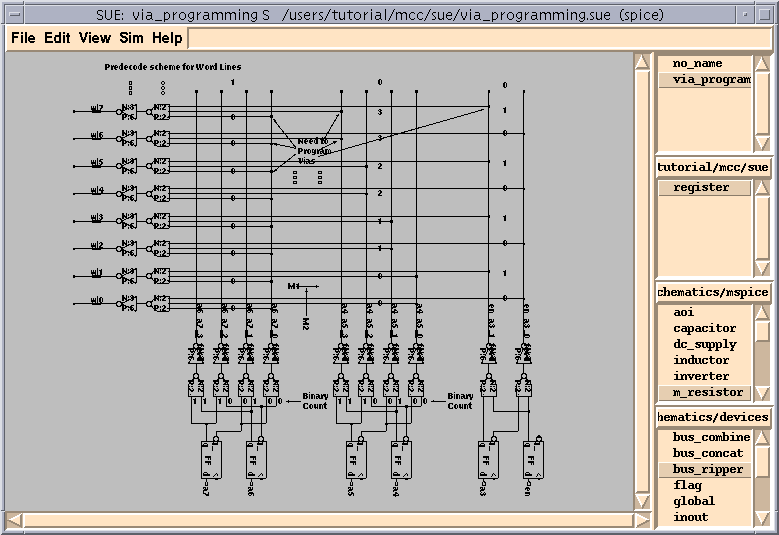
- Open the
sram.tclfile again and look for the following lines:# program the word lines program_cell wlds program \ {en_a3_0_feed en_a3_1_feed} \ in2 \ "mmi_sram_wld_%d" \ $ROWS \ 1 program \ {a4_a5_0_feed a4_a5_1_feed a4_a5_2_feed a4_a5_3_feed} \ in0 \ "mmi_sram_wld_%d" \ $ROWS \ 2 program \ {a6_a7_0_feed a6_a7_1_feed a6_a7_2_feed a6_a7_3_feed} \ in1 \ "mmi_sram_wld_%d" \ $ROWS \ 8 }
- The
programcommand drives the programming of vias, and takes the following arguments:
program \ <list of ports to alternatively connect> \ <port to connect to in cell> \ <format of name of instance to connect in> \ <number of cells to make connections in> \ <number of cells to program before moving to next port>
- The labels for both
<list of ports to alternatively connect>and<port to connect to in cell>are actually down in themmi_sram_wldcell, but the vias will be placed in theMMI_SRAM_wlds_128X2cell.
- The net we highlighted in Figure 18 was
en_a3_feed. This signal was connected toin2fromthemmi_sram_wldcell. MCC will look for instances ofmmi_sram_wldand the names of the instances will bemmi_sram_wld_0,mmi_sram_wld_1,iteratedup tommi_sram_wld_15. Remember, we setROWSto 16 for this example, so %d will go from 0 to 15. Because<number of cells to program before moving to next port>is set to 1, MCC will alternate between connectingen_a3_0_feedtoin2and connectingen_a3_1_feedtoin2.
- Select the
en_a3_1_feednet as shown in Figure 20 and notice that the alternate instances ofmmi_sram_wldhave the vias programmed.Figure 20: Net "en_a3_1_feed" Selected
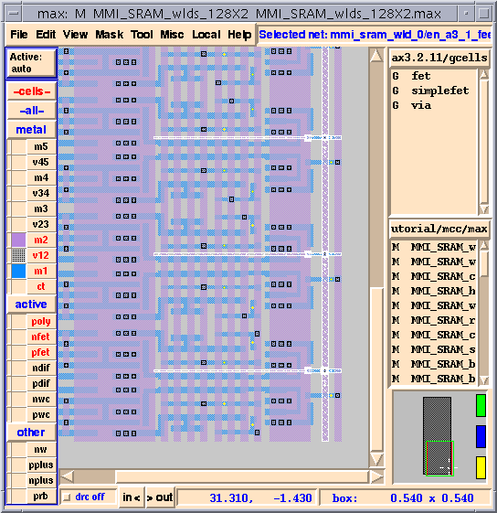
- You should now see something like Figure 21.
- Starting from the bottom,
a4_a5_0_feedgets connected toin0in the first two cells and thena4_a5_1_feedgets connected toin0in the next two cells and so on.
- You can look at the next four nets to the left of these nets to see the programming of the
a6_a7_0_feedthrougha6_a7_3_feednets.
Figure 21: Nets "a4_a5_x_feed" Selected
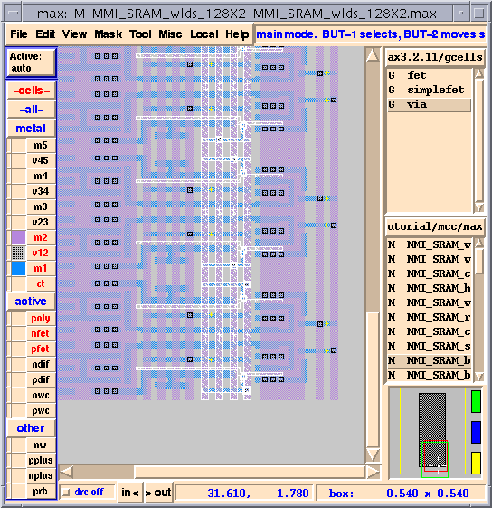
Port Propagation
- Once you have tiled up and via programmed a megacell, you can add the I/O and global ports to the megacell for verification and connection to the outside world. MCC adds these ports by propagating them directly up from the leaf cells and renaming them (if needed). The ports are simply added to the top level on the same layer and at the same location as the ports in the leaf cells, as if the entire megacell were flattened.
- Look again at the
sram.tclfile (more sram.tcl) and look for the following lines:# Controls port propagation. # left | right | up | down (defaults to left if not defined) set MC(default_propagate_direction) left set MC(sram,propagate,tmp) { {count {mmi_sram_read_mux4/Dout rdata\[%d\]}} {count {mmi_sram_wdata_latch/din wdata\[%d\]}} {prop mmi_sram_base_0/a[0] mmi_sram_base_0/a[1] mmi_sram_base_0/a[2]} {prop mmi_sram_base_0/a[3]} {prop mmi_sram_base_0/a[4] mmi_sram_base_0/a[5] mmi_sram_base_0/a[6]} {prop mmi_sram_base_0/memenable mmi_sram_base_0/wenable mmi_sram_base_0/clk} {prop mmi_sram_base_0/gnd mmi_sram_base_0/vdd} }
- When propagating inputs and outputs that are a function of the size of the megacell, you typically use the
countcommand. Thecountcommand propagates each port in a group of leaf cells with unique names. In the previous propagate command example, if there are 16 copies of themmi_sram_read_mux4leaf cell in the design, you will get the portsrdata[0]tordata[15].
- In the
countcommand, the ports can be labeled from right to left (left), left to right (right), top to bottom (down), or bottom to top (up). The defaultcountdirection is right to left, sordata[0]will be on the right.
- The other commands in the previous "Port Propagation" section simply propagate the signals keeping the same names. For example, the port
mmi_sram_base_0/a[0]is brought to the top level and nameda[0]. Refer to the "Port Propagation" section of the MCC Manual for further details.
| ----- Micro Magic ----- |